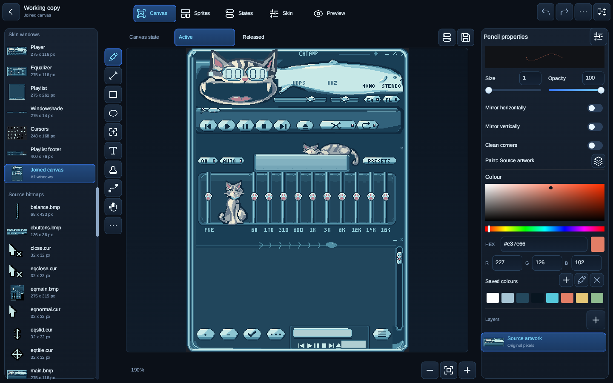
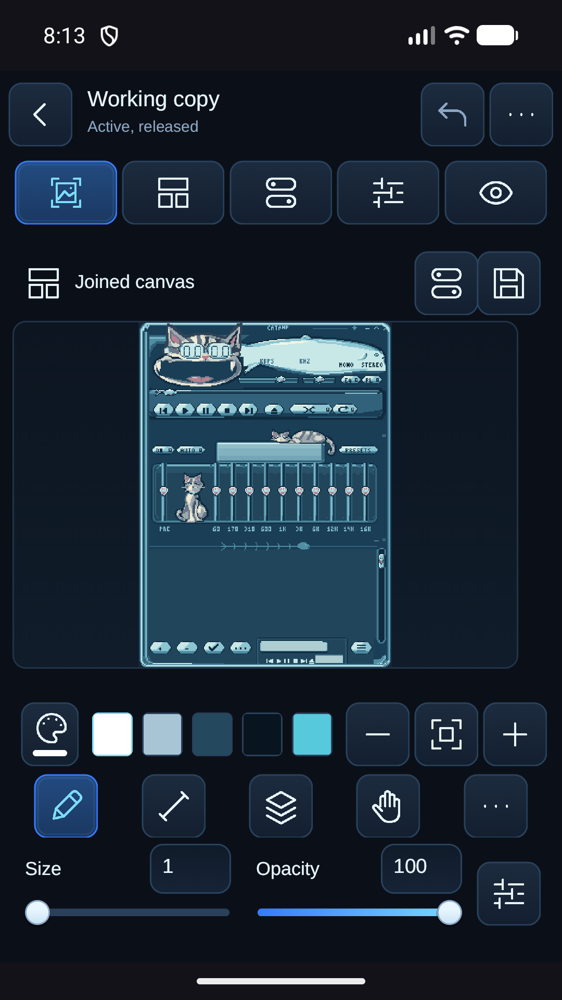
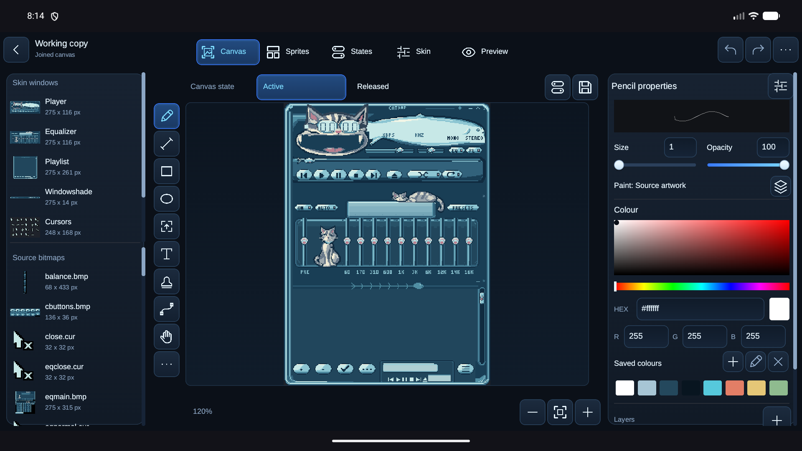

FILES AND STREAMS
Play from the original file.
Open audio files or add a folder. Cranamp keeps audio in its original location. You can also open stream URLs and import M3U, M3U8 or PLS playlists.
Audio formats and limitsMUSIC PLAYER + SKIN EDITOR
Play your audio files in a classic Winamp skin. Open Skin Studio to change the colours or draw your own artwork.
No account or ads. Bring your own music.
macOS · Windows · Linux · iOS · Android · Web
FILES AND STREAMS
Open audio files or add a folder. Cranamp keeps audio in its original location. You can also open stream URLs and import M3U, M3U8 or PLS playlists.
Audio formats and limitsCLASSIC CONTROLS
Use the ten-band equalizer and preamp. Pick a bundled Catamp skin or open a WSZ skin. The player remembers your playlist and sound settings.
Playback helpBUILT-IN SKIN STUDIO
Draw across the joined player windows with layers and masks. Keep a layered CSTUDIO project, or export a classic WSZ skin.
Open Settings in the player, then choose Open Skin Studio.


LAYOUTS FOLLOW THE WINDOW WIDTH
Compact screens keep drawing controls near the canvas. Wider screens show skin parts and tool properties alongside it.

SKIN SETTINGS
Enter HEX or RGB values. Change playlist and visualizer colours with a preview. Skin settings also include bitmap fonts, window shapes and cursors.
Read the Studio guide
Actual app captures from the 0.1.92 release gallery. Select any image to view it at full size. Store versions may differ while an update is under review.
DESKTOP ONLY / MCP
Enable a local MCP server in Studio to let an agent use the same canvas and drawing history. The server is off by default and stops when Studio closes.
Connected programs can read or change the skin and access files within Cranamp’s permissions. The agent’s provider may receive data that it reads.
MCP is unavailable on Android, iOS and the web.

DOWNLOAD
Try Cranamp in your browser or install it on your device.
Audio support depends on the platform and storage provider. Check supported formats.